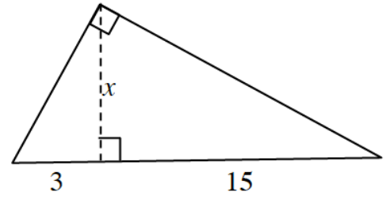
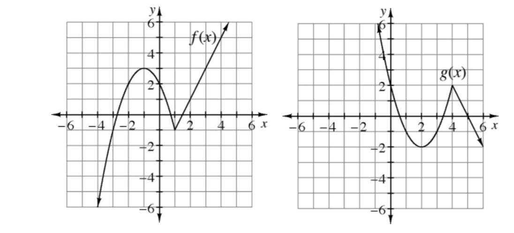

There are no buttons for secant, cosecant, or cotangent on a calculator. In order to evaluate these expressions, the definition of the reciprocal function needs to be utilized. Use a calculator to evaluate each of the expressions below. The first answer is given as a check. All angles are in radians.
\(\operatorname{csc}(3)\approx 7.086\)
\(\cot\left(\frac{2}{7}\right)\)
\(\sec\left(\frac{4\pi}{5}\right)\)
\(\csc(x)=1\)
\(\sin(x)=\frac{\sqrt{2}}{2}\)
\(\csc(x)=\sqrt{2}\)
The diagram has three right triangles. How are these three triangles related? Use this relationship to calculate the value of \(x\) in the diagram.

Use the Pythagorean Identity to simplify each trigonometric expression.
\(\cos^{2}(\theta)+\sin^{2}(\theta)\)
\(1-\cos^{2}(\theta)\)
\(1-\cos^{2}(5)\)
\(1-\sin^{2}(\beta)\)
\(1-\sin^{2}(3\delta)\)
\(4-4\sin^{2}(3\delta)\)
The graphs of \(y=f(x)\) and \(y=g(x)\) are shown below. Write an equation in terms of \(f(x)\) that will transform the graph of \(y=f(x)\) into \(y=g(x)\).

Complete the following division problem. Express any remainder as a fraction.
\(\left(4x^4-2x^3-7x-5\right)\div\left(2x-3\right)\)
Find the slope of the secant line through the points \(\left(x,f(x)\right)\) and \(\left(x+h,f(x+h)\right)\). The answer will be an algebraic expression, not a number. This expression should look familiar. What is another name for this expression?
Given vectors \(\vec{\text{u}}=\langle -3,2\rangle\) and \(\vec{\text{v}}=\langle 4,-1\rangle\), if \(\vec{\text{w}}=2\vec{\text{u}}-3\vec{\text{v}}\), what is \(||\vec{\text{w}}||\)?
Consider the graphs of \(y=\sin(x+\pi)\) and \(y=-\sin(x)\).
Sketch both graphs on separate axes.
What do you notice?